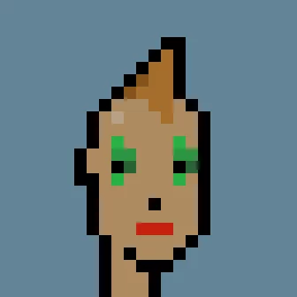
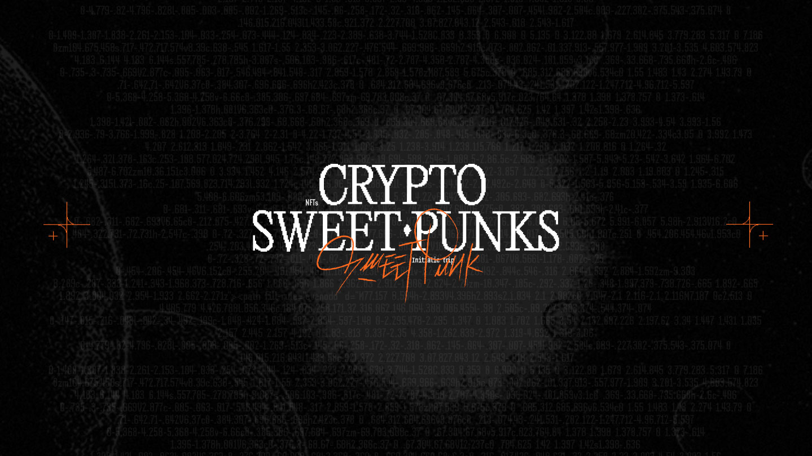

8 idées révolutionnaires qui peuvent faire gagner les marques dans le monde des NFT
Articles
Vous n’y connaissez pas encore grand-chose mais vous aimeriez briller lors d’une prochaine réunion ou d’un dîner en ville? Nous vous révélons dans cet article des cas d’utilisation concrets qui pourraient bien servir les marques dans un avenir proche.
Les NFT ne sont pas simplement des actifs financiers purement spéculatifs aux valeurs délirantes. Même si certains s’échangent pour des montants astronomiques sur les marketplaces (Visa vient d’acquérir un CryptoPunk en pixel art pour la modique somme de 150 000$), la véritable valeur des Non-Fungible Tokens se trouve ailleurs. Petit tour d’horizon des projets blockchain les plus prometteurs.

Le CryptoPunk acheté par Visa pour 150 000 dollars – Source : Larva Labs
Placement produit : votre barre d’énergie chocolatée préférée dans un jeu vidéo
Les NFT vont donner de la valeur aux objets virtuels issus des jeux vidéo et donc abattre la frontière entre le jeu et la réalité. Les utilisateurs créent de la valeur en jouant puis échangent leur butin sur des plateformes communautaires comme Ultra, un futur concurrent du mastodonte Steam. Le jeu et tous les éléments qu’il contient (objets, skins, …) sont “tokenisés”, c’est-à-dire uniques et échangeables. C’est là le moyen pour les éditeurs de créer un effet de rareté et donc un engouement supplémentaire. Récolte en masse ou série limitée, comme dans le projet Big Time, tout peut se vendre et s’acheter contre de l’argent véritable.
Si la population mondiale est au rendez-vous du métaverse, il y a fort à parier que ces objets feront l’objet de placements produits, où les marques seront en compétition et feront valoir leur désirabilité. Pourquoi ne pas vendre certains produits dans ces univers, pour en envoyer une version physique chez le consommateur ? Telle une friandise destinée à gagner des points d’énergie et quelques centaines de calories dans la vraie vie. Le champ des possibles est aussi vaste qu’un supermarché. Le métaverse pourrait devenir une version déportée d’Amazon.
Données personnelles : un coffre-fort plus inviolable qu’une banque
La technologie blockchain trouve une application évidente dans le transfert et la protection de données. Le projet français Ternoa permet aux utilisateurs de stocker des données sous forme de NFT à la manière d’une capsule temporelle – à laquelle personne, à part vous, n’a accès. Plusieurs protocoles sont proposés pour programmer le déverrouillage de ces coffres-forts numériques, offrant des utilisations multiples. Il est notamment possible de choisir une date d’activation, celle d’un anniversaire par exemple. Ces capsules ont également un potentiel dans la transmission d’héritages. Au décès de son propriétaire, seuls les héritiers désignés peuvent accéder au contenu du NFT.
Les utilisations sont nombreuses et le sujet sensible. Quels services et quelles marques sauront en tirer profit intelligemment, tout en respectant l’utilisateur?
Mode : tout le monde aura le droit à son ¼ d’heure de gloire sur le podium
“Qui achète et porte ça ?” Voilà une question que tout le monde s’est posée, en voyant un défilé Haute Couture. Dans un monde virtuel, les lois de la physique et les barrières de l’extravagance tombent. Les opportunités pour l’industrie de la mode sont nombreuses. Avec l’essor toujours grandissant des jeux vidéo et des métavers, la personnalisation d’avatars est un enjeu majeur pour ce secteur. Les internautes sont attachés à leur image et sont demandeurs de pièces de grandes marques pour habiller leurs doubles numériques.
Cet attachement est particulièrement marqué au sein de la génération Z : un jeune sur trois déclare que son identité numérique est la version la plus authentique de lui-même (Étude Vice 2021) . Ici encore, l’effet de rareté peut créer un engouement, comme les NFT sneakers uniques créées par RTFKT (studio racheté par Nike). Au-delà de la personnalisation d’avatars, ces NFT sont également des objets de collection, comme ceux de Gucci ou encore Vuitton. Les marques se rapprochent ainsi d’une cible plus jeune et assoient leur présence dans l’univers du gaming pour de nouvelles opportunités financières.
Immobilier : métaverse, cherche son Stéphane Plaza
Bien qu’il soit encore difficile d’enregistrer des biens sous forme de NFT, l’immobilier virtuel est lui en pleine expansion. Des projets métavers comme Decentraland ou Sandbox proposent ainsi d’acheter des parcelles d’un monde numérique sous forme de NFT. Depuis les annonces de Mark Zuckerberg quant au changement de nom de Facebook Inc. et à sa volonté de créer un métavers, la cote de ces actifs immobiliers virtuels a grimpé en flèche.
Aujourd’hui sur Opensea, les NFT Decentraland les moins chers sont accessibles aux alentours de 15 000 dollars et la parcelle adjacente à celle de Snoop Dogg sur Sandbox s’est vendue 450 000 dollars en décembre. Ces titres de propriété numériques sont la clé d’entrée dans les multiples métavers et peuvent procurer des avantages exclusifs. Les résidents de Decentraland ont eu le privilège de pouvoir assister au dernier Open d’Australie en réalité virtuelle, alors que le tournoi était soumis à de fortes restrictions sanitaires. Dans la vraie vie, il est possible de tokeniser de véritables biens immobiliers, pour investir et percevoir des loyers, à partir de 10€. La révolution de la propriété est en marche.
Dons : des NFT pour remplacer les autocollants de la Croix Rouge
Le petit sticker collé sur votre veste après votre généreux geste représente plus qu’un bout de papier plastifié. Il est la preuve et la reconnaissance de faire partie d’une communauté de bienfaiteurs, et libère une petite dose d’endorphine que connaissent les âmes généreuses. Grâce à des applications sociales intelligemment conçues, les associations pourraient à l’avenir délivrer des NFT représentant votre part d’effort à la cause. Affiché comme une médaille d’honneur, ce token pourrait également être directement lié aux impôts et faire office d’attestation de don.
Un candidat à l’élection présidentielle sud-coréenne a annoncé l’utilisation de NFT pour collecter des fonds de campagne. L’opération, qui devrait commencer en Janvier 2021, a un objectif clair : conquérir la jeunesse du pays, particulièrement amatrice de technologies et déjà grande collectionneuse de NFT.
Art : Andy Warhol aurait-il adopté les NFT ?
L’artiste visionnaire a imaginé l’art sérigraphié, produit à la chaîne, célébrant l’avènement de la mondialisation. Aujourd’hui les NFT ajustent cette vision, et permettent de redonner une valeur d’unicité aux œuvres digitales, initialement copiables à l’infini.
Le marché de l’art fut le premier à être investi massivement par les NFT. Durant les plus hauts pics de l’épidémie de covid-19, l’art dans “sa version physique” n’était plus accessible et l’intérêt pour les arts numériques a été décuplé. C’est ainsi qu’on assiste en mars à la vente record d’un NFT de l’artiste Beeple chez Christie’s pour la somme colossale de 58,1 millions d’euros (le troisième prix d’enchère le plus élevé jamais atteint par un artiste vivant). Cette technologie, équivalente à un certificat d’authenticité, permet aux artistes numériques de protéger leurs œuvres, mais ouvre également de nouveaux spectres en matière de collection et d’exposition. Avec le développement des métavers, chacun pourra bientôt disposer de son propre musée virtuel et exposer ses collections de NFT librement.
CRM : vous avez la carte du magasin ?
Les NFT comme objets de fidélisation favorisent également la création de communautés. Généralement produits en séries limitées, ces jetons symbolisent l’appartenance à un groupe fermé et sont souvent associés à des avantages exclusifs. Les membres de ce “club” accèdent ainsi à des événements qui leur sont réservés, gagnent des cadeaux ou des objets uniques, comme les bouteilles de champagne Dom Pérignon x Lady Gaga qui ont été livrées aux acheteurs des NFT de la marque.
Cette volonté de bénéficier de privilèges et de faire partie d’une élite est un puissant levier marketing qui pourra être activé de plusieurs manières grâce à la blockchain. En effet, au-delà de conférer des avantages uniques, le simple prix ou la rareté d’un NFT peut conférer à son détenteur un certain statut social. En exposant ses collections virtuelles dans un métavers par exemple, n’importe qui peut étaler sa fortune ou intégrer l’intelligentsia artistique numérique. Un potentiel bien loin des pénibles cartes de fidélité, proposées à la caisse des chaînes de magasin.
Engagement : les fans, créateurs et VRP de votre marque ?
Si les marques peuvent vendre ou offrir des NFT à leur communauté, la prochaine étape est peut-être celle de la co-création. Un objet virtuel que le consommateur peut créer lui-même, en s’appropriant l’univers d’une marque, aura une valeur sentimentale toute particulière et potentiellement une valeur financière conséquente. Ceci pourrait marquer un renouveau dans les relations entre les annonceurs et leur audience.
Il faut néanmoins posséder quelques compétences dans des logiciels de création graphique pour réaliser des œuvres numériques, voilà pourquoi la maison de mode The Fabricant a développé sa plateforme The Fabricant Studio. Les internautes peuvent y concevoir des NFT grâce à une interface simplifiée, qui ne requiert aucune connaissance technique en design ou sur la technologie blockchain.

Découvrez les voeux Sweet Punk 2022 en NFT
Depuis l’ère du marketing moderne, époque des Mad Men, il est acquis qu’une marque ne se construit plus seulement sur des produits fonctionnels et utiles. Cela fait longtemps que la basket de Nike représente bien plus que du confort de course lors de votre 10km dominical. Avec les NFT et le développement des mondes virtualisés, la notion de possession, de propriété, d’unicité, de rareté, de valeur, offre au WEB 3.0 un marché gigantesque.
Seules les marques capables de construire une image puissante pourront exister et créer cette néo-désirabilité, impalpable de fait. Le branding, l’ADN et les valeurs d’une marque, dans le monde dématérialisé, seront plus que clé. À vous de jouer.